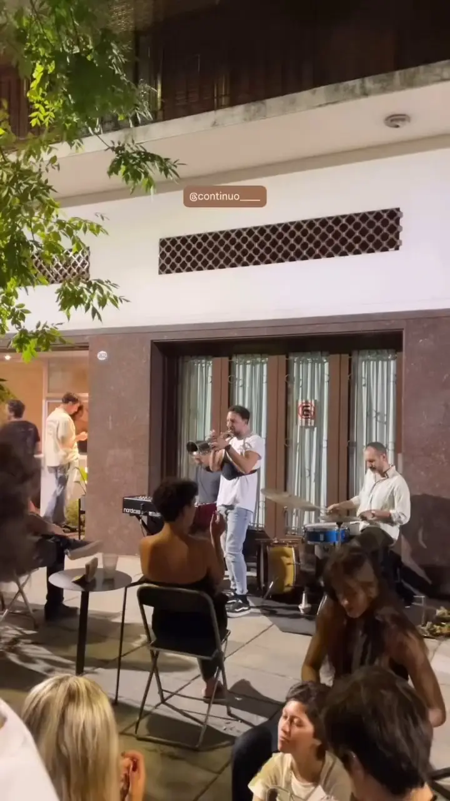
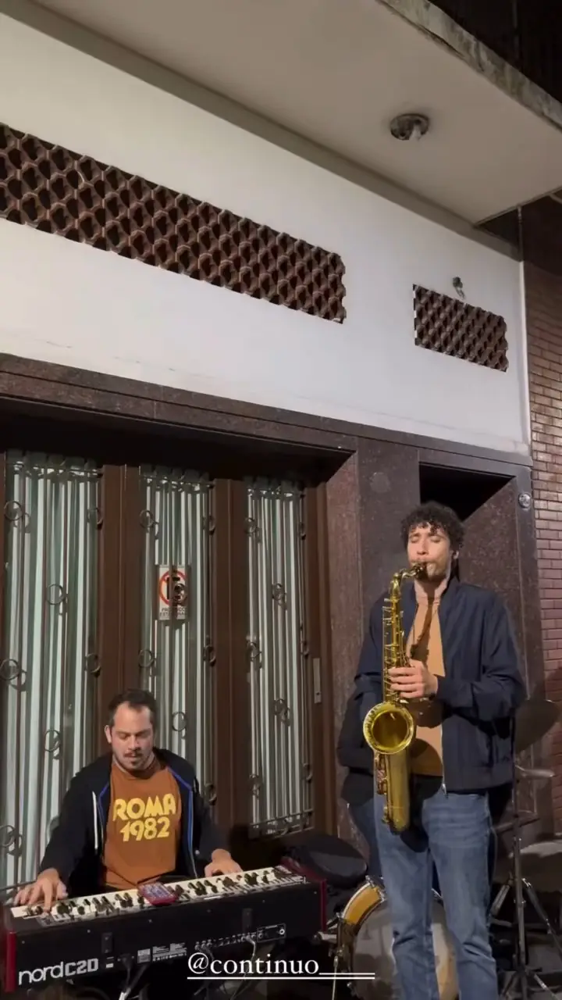
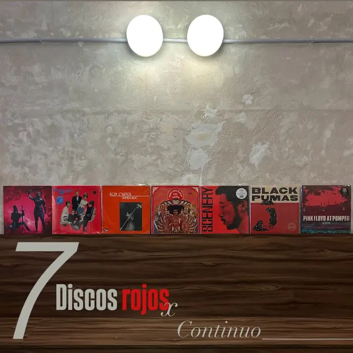
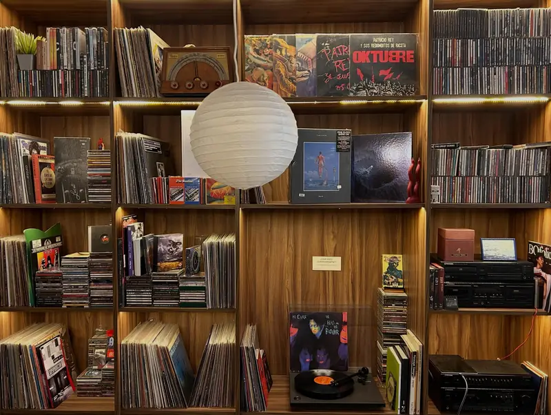
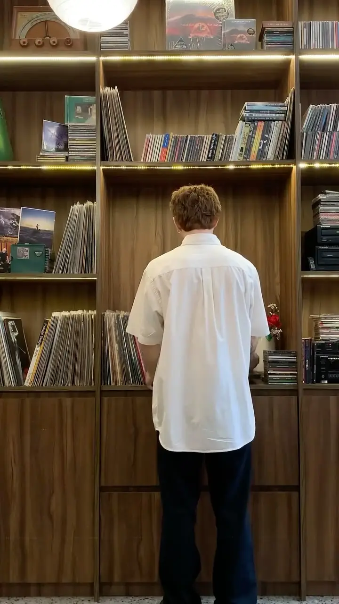
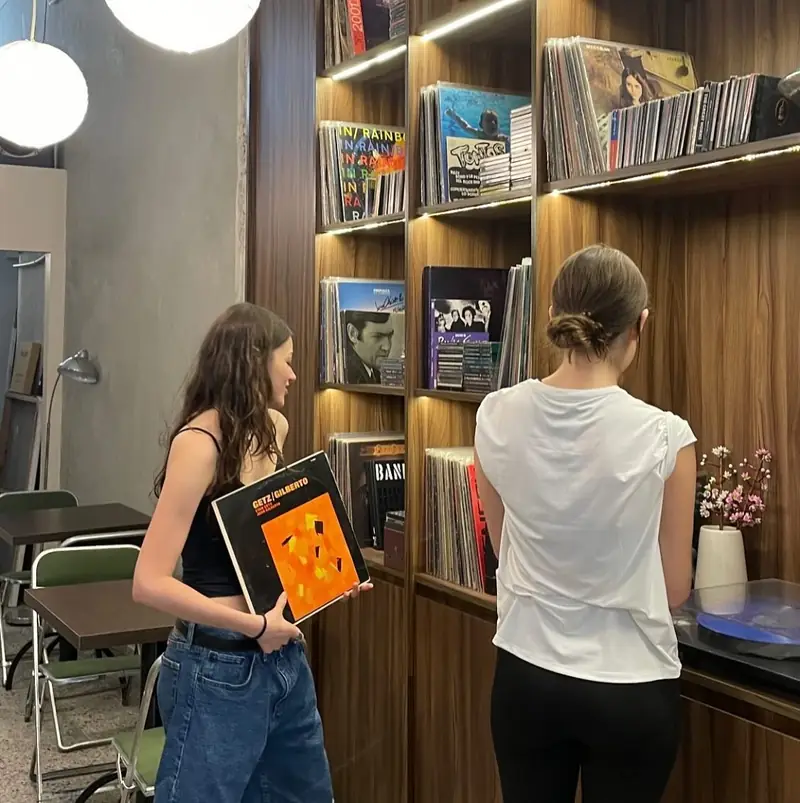
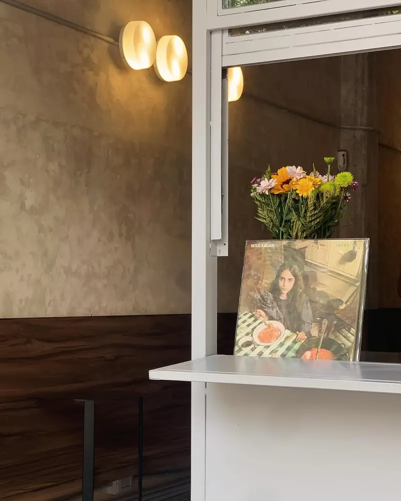
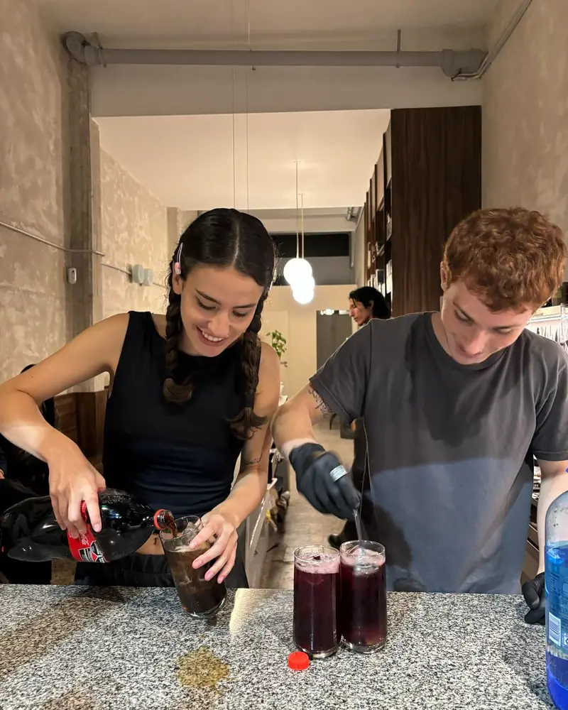
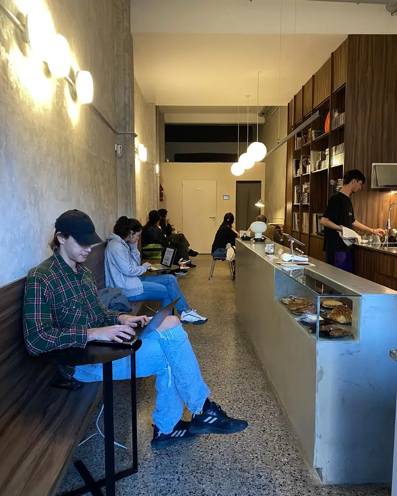

Café /// Pastelería /// Mucha música
Un café con buena música, siempre.
Vinilos que eligen ustedes, pastelería de la casa y, algunas noches, jazz en vivo. Machaín 3632, Saavedra.
A veces abrimos de noche
Continuo de Noche
Jazz en vivo los jueves, DJ sets, cena y tragos. Elegí la fecha y guardate una mesa.
Machaín 3632 · Saavedra
Martes a viernes 9:00 a 20:00 hs · sábados y domingos 9:30 a 20:00 hs
Lado A · Pista por pista
La carta
Elegí una pista: café, frías, salados o dulces. Todo se puede pedir para pasar a buscar.
Arrastrá el brazo o tocá una pista
También está en /carta, la que abre el QR de las mesas.
Lado A · Los simples
Promos de todos los días
Cuatro combos que no fallan. Sumalos y pasás a buscarlos.
Lado B
Continuo de Noche
Jazz en vivo los jueves, DJ sets y pop-ups con amigos. Las noches con reserva se guardan desde acá.
- Cargando la agenda…


Lado A · La batea
Discos que buscan casa
Vendemos una parte de la colección. Pasá las fundas, separá el que te guste y lo retirás en el local.

Arrastrá para pasar las fundasDeslizá para pasar las fundas
Lado A · Bonus track
Ustedes eligen la música
Las bibliotecas están a mano: sacás un disco, se lo das a la barra y suena.






Deslizá la foto para ver la siguiente
Lado A · Cómo llegar
Machaín 3632
Saavedra, Buenos Aires.
- Martes9:00 a 20:00 hs
- Miércoles9:00 a 20:00 hs
- Jueves9:00 a 20:00 hs
- Viernes9:00 a 20:00 hs
- Sábado9:30 a 20:00 hs
- Domingo9:30 a 20:00 hs
- LunesCerrado
Las noches de Continuo de Noche abrimos más tarde: mirá la agenda.
4,8 397 reseñas en Google